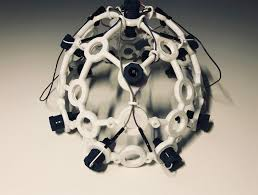

1,272,000 CR
Loading...

1,272,000 CR
Seller: neuro_haul ⭐⭐⭐⭐ (312 reviews) Independent Signal Trader
Recovered from a decommissioned research hub in the **San Jose sector**. This isn't consumer neural hardware. The **Neural Ghost V.4** is a modified **tFUS (Transcranial Ultrasound) lattice** designed to bypass the empathy dampeners installed in licensed neural rigs. The lattice has been scrubbed. Minimal **neural bleed** detected from the previous operator, though occasional sensory ghosting may still occur. Firmware includes a **Direct-Tap exploit**. When the dry-electrodes reach >98% conductivity against the user's skull, the device can synchronize your limbic system to any neural broadcast on the Shadow network. Feel their adrenaline. Their spatial vertigo. Fragments of another person's perception. Use responsibly.